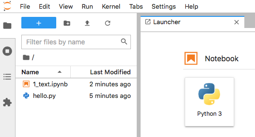
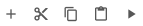
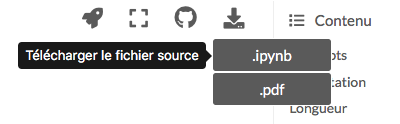

Thonny¶
Thonny est un environnement de développment pour Python. Il comporte un éditeur de script et une console. Il installe un environnement virtuel pour Python et permet d’y installer facilement des modules supplémentaires.
Installation¶
Il peut être téléchargé depuis thonny.org
Installer des modules¶
Pour installer des modules supplémentaires
choisissez le menu Outils > Gérer les paquets…
cherchez le module (par exemple jupyterlab)
cliquez sur le bouton Rechercher sur PyPi
cliquez sur le bouton Installer
Lancer Jupyter Lab¶
installez le module jupyterlab
choisissez le menu Outils > Ouvrir la console du système…
lancez la commande
jupyter lab
Ouvrir un notebook¶
cliquez sur l’icône dossier tout à gauche
sélectionnez votre fichier
.ipynbouvrez-le
choisissez menu Edit > Clear All Output

Le boutons¶

ajouter une cellule en dessous (B = Below)
couper la cellule (X)
copier la cellule (C)
coller la cellule (V)
exécuter la cellule (maj + retour)
Les touches sur Mac¶
hashtag
#(alt+3)crochets
[](alt+5/6)accolades
{}(alt+8/9)parenthèses
()(maj+8/9)
La barre
oblique
/(maj+7)verticale
|(alt+7)oblique inversée
\(alt+maj+7)
Télécharger un Jupyter notebook¶
Pour télécharger un Jupyter notebook depuis ce site
placez la souris sur le 4e bouton
descendez vers .ipynb
téléchargez le notebook

Modules utiles¶
jupyterlab
jupyter-book
ghp-import
matplotlib
pygame
Mis à jour de pip¶
pip install --upgrade pip
Matplotlib¶
installez le module matplotlib
Exemple de programme:
import matplotlib.pyplot as plt
import numpy as np
t = np.linspace(0, 4*np.pi, 100)
plt.plot(t, np.sin(t), label='sin(t)')
plt.plot(t, np.cos(t), label='cos(t)')
plt.legend()
plt.grid()
plt.show()